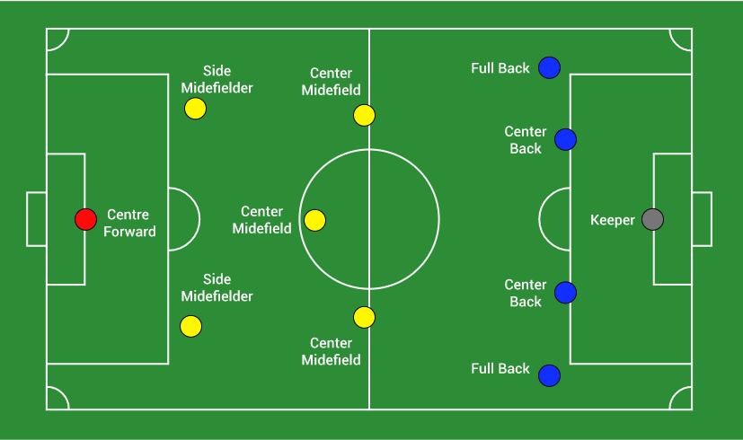

Football Rules and Regulations
Football is one of the world's most popular outdoor games.
There are 17 laws that govern how the game is to be played so
that it is fair to all players taking part in a football game.
The most basic rule is that a player needs to move the ball
towards the opponents’ goal line using any body part except
the hands and arms. The Laws of the Game were created in 1863
and were updated with time.
Objective of a Football Match
The main objective in a football match is to score
more goals than the opponent team. Whichever team has more
goals at the end of 90 minutes is declared the winner of the
football match.
If both teams score an equal number of goals, then either a draw
is declared or the game goes into extra time or a penalty shootout,
depending on the competition.
Rules for Ball and Players’ Equipment Used
- A football game is played using a spherical ball, known as the football (or soccer ball), of 68 - 70 cm (27-28 inch) in circumference and weighs between 410 - 450 g.
- The balls are usually made from leather and filled with air to an appropriate pressure for playing.
- Every player must wear appropriate equipment including a jersey, shorts, footwear, and long socks with protective guards for a standard football game
Rules for Football Players
It is one of the most crucial football rules for the game.
- A football match has two teams playing against each other.
- The number of players in each team should be a minimum of 7 and must not exceed 11.
- Four categories of players are there in a football match. Goalkeeper, defenders, midfielders, and forwards.
- There must be one player designated as a goalkeeper in each team. If a goalkeeper is unavailable/suspended, any position player can become the designated goalkeeper.
- Each team is led by a captain, whose one official responsibility is to represent the team at the coin toss before the kick-off or penalty kicks.
- Winning the coin toss means your team gets to choose the initial direction of play. The direction of both teams switches after half time before the second half starts. The team that loses the toss does the first kick-off and starts.
Player Formation in Football
The player formation is not exactly one of the football rules, it is a football strategy that constitutes how players in a team position themselves in relation to each other on the football field.
- A player's position in a formation typically defines whether a player has a more defensive or attacking role.
- Formations are described by usually three or four numbers in order to denote how many players are in each row of the formation, from defense to offense. For example, the "4–5–1" formation has four defenders, five midfielders, and a single forward.
- Different formations are used depending on how a team wishes to play in a football match. A team may switch formations between or during the game for tactical reasons.

Number of Substitutions in Football
Similar to the player formation, the use of substitutions in football is also a football tactic.
- A number of players may be replaced by substitutes during the game. A maximum of three or five substitutions are permitted in most of the competitive football games.
- Common reasons for a substitution include injury, tiredness, ineffectiveness, or a tactical switch. A player who has been substituted can not take part in the match again
Football Match Time
One of the basic football rules is the football match time.
- A football match (game) consists of two halves. The normal duration or playing time of each half is 45 minutes plus any extra time to compensate for player substitution stoppages or injuries during the half
- A football match (game) consists of two halves. The normal duration or playing time of each half is 45 minutes plus any extra time to compensate for player substitution stoppages or injuries during the half.
- Overtime is added to a match when no winner has been determined by the end of regular time. The overtime period is of 30 mins (2 halves of 15 mins each) duration.
Disciplinary Cards in Football
There are two disciplinary cards in football: Red and Yellow cards. These colors were first introduced at the 1970 Football World Cup and are in use ever since.
- Yellow means the player is only cautioned and given a warning
- Red card means dismissal from the game for that particular player
- Two yellow cards in the same match for one player also result in the player’s dismissal